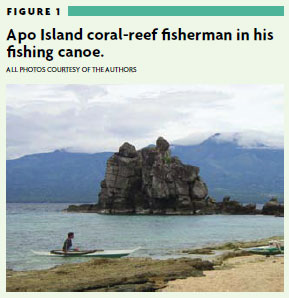
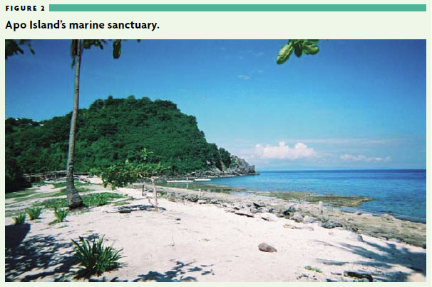
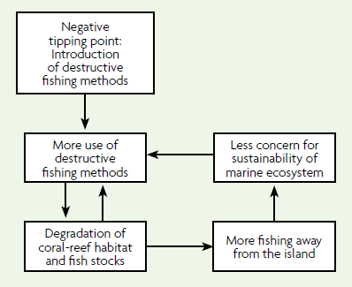
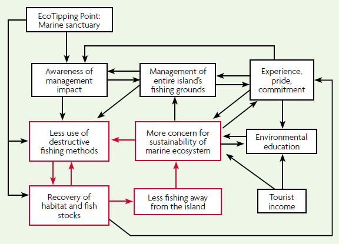

EcoTipping Points: Sharing Environmental Success Stories with Students
- Authors: Gerald Marten and Catherine E. Matthews
- Gerald G. Marten (marteng@eastwestcenter.org) is an ecologistat the East-West Center in Honolulu, Hawaii; Catherine E. Matthews (cmatthews@uncg.edu) is a professor of K–12 science education and environmental education at the University of North Carolina at Greensboro.
- This article was published in The Science Teacher, Vol. 76, No. 7, October 2009.
- Download (PDF)
Contrary to what we often hear and teach, there is good news to be found on the environmental front. Environmental success stories show us not only that sustainability is possible, but also how people have made it happen. We can make these stories and their lessons accessible to students with help from the EcoTipping Points Project, which has collected environmental success stories from around the world.
The Apo Island story
One great example of an environmental success story comes from Apo Island, a small fishing village in the Philippines - a tropical paradise of coral reefs and sandy beaches (Figure 1). The Philippines coastal, coral-reef fishery is one of the world’s largest fisheries, but is also in serious trouble. Many fishing villages are dying off - with fishermen catching only one or two fish from an entire day’s work. Apo Island came close to the same fate, but instead, its fishermen found a way to save their fishery and cherished way of life (Marten 2005).

Figure 1 - Apo Island coral-reef fisherman in his fishing canoe
The problem began in the 1950s with the introduction of destructive fishing methods, such as the use of dynamite and cyanide - tactics very effective for catching fish, but not very sustainable. The fishery descended into a vicious cycle of damage to the coral habitat, dwindling fish stocks, and the need for even more destructive fishing methods to catch much at all. To make ends meet, Apo fishermen - like so many others - were traveling farther from their village, working long hours to find places that still had enough fish, using harmful fishing methods to catch all the fish they could, and ignoring the future health of the fishery. As a result, the national government enacted laws banning destructive fishing - but these laws were not enforceable.
It seemed impossible to escape the downward spiral, but in 1980, Angel Alcala, a marine scientist at nearby Silliman University, began a two-year dialogue with Apo’s fishermen to help them break out of the rut. They discussed what was happening to the coral ecosystem that surrounded the island to a distance of about 500 m from the shore, and what they might do about the problem. Alcala took some of the fishermen to an uninhabited island, where he had protected a small stretch of coral reef from fishing for several years. The number of fish in the protected area was impressive, and fish from that area were helping to replenish fish stocks around the rest of the island.
In 1982, Apo Islanders decided to try something similar. They designated 450 m of the island’s shoreline - 10% of the fishing grounds around the entire island - as a no-fishing zone and marine sanctuary (Figure 2). Enforcement was easy; it took just one person on the beach to watch the sanctuary, a task that rotated among families who lived on the island.

Figure 2 - Apo Island's marine sanctuary
No one was sure how well this plan would work. Three years later, however, the sanctuary was overflowing with fish. Fishing near the edge of the sanctuary was distinctly better than before. Most importantly, the fishermen were so inspired that they decided to do something about the rest of the island’s fishing grounds. They enacted two rules, which were enforced by “marine guard” volunteers from island families:
- Only Apo Island residents could fish around their island.
- No destructive fishing methods were allowed.
At this point in time, there was no precedent for a fishing village to assume the authority to create such legislation, but with assistance from a local nonprofit organization, Apo’s village council negotiated permission from higher levels of government to establish and enforce these two rules. The fishery rapidly improved, though it took 10 years for stocks of the largest fish to recover fully. Now Apo fishermen do most of their fishing right around the island, and with a short day’s work, they catch all the fish they need. They succeeded in turning their problem around!
The restoration of Apo Island’s coral-reef ecosystem set in motion a cascade of spin-offs that reinforced sustainability. Reef tourism brought in additional income and strengthened the incentive to maintain a healthy marine ecosystem. The island’s primary school added a marine ecology curriculum, and the islanders used some of the tourist income to create scholarships for many of their children to attend high school and college on the adjacent mainland. Some Apo students are now in graduate school studying marine ecosystem management. In addition, visitors from other fishing villages have come to Apo Island to see what is happening, and 700 villages in the Philippines now have marine sanctuaries.
EcoTipping Points
So often, the problem with environmental issues is that they are overwhelmingly complex and driven by powerful social and ecological forces. It sometimes seems that we are helplessly floundering when we try to make a positive change. The number of environmental issues that desperately need our attention is overwhelming; but dwelling on gloom and doom in our teaching can be paralyzing, for both teachers and students. Exposing students to success stories is important for this reason. The lessons from these stories can help change the way we think and teach about solving environmental problems. They also motivate students to learn important ecological concepts and inspire them to take action.
The EcoTipping Points Project has collected success stories from around the world. Like the Apo Island example, these stories highlight communities that have turned environmental degradation around, creating something sustainable in its stead. In each case, there is a lever that sets in motion the process leading to success.
The idea of a lever - that little things can make a big difference - can be very exciting. In his bestselling book, The Tipping Point, Gladwell (2000) argues that New York City went from a city where people stayed in their homes in the evening to avoid violence, gang warfare, and drug trafficking in the 1970s to a busy, bustling, fairly safe metropolis in the 1990s. Gladwell suggests that this dramatic change occurred because of smaller changes - or levers - such as covering up graffiti, repairing broken windows, and arresting individuals who committed minor offenses, such as failing to pay their subway fares. We call the levers in our success stories EcoTipping Points. They turn environmental decline toward a course of restoration and sustainability. The marine sanctuary was the lever that set the turnabout on Apo Island in motion. It was an EcoTipping Point.
Lessons from EcoTipping Point stories
The EcoTipping Points website offers a variety of stories about communities facing a broad range of environmental problems (see “On the web”). Figure 3 describes 5 of the approximately 100 stories available on the website. Each case displays the same basic structure as Apo Island, a story line that features two dramatic shifts:
- The negative tip: A trajectory of decline driven by interconnected and mutually reinforcing vicious cycles (Figure 4); and
- The positive tip: A course of restoration and sustainability (Figure 5).
The lever for a positive tip, the EcoTipping Point, typically combines the “right” ecotechnology - a practical application of traditional sustainability knowledge and modern sustainability science - with the social organization needed to put that particular ecotechnology effectively into use. Ecotechnology can take on various forms, such as the marine sanctuary at Apo Island and the examples in Figure 3.
Figure 3 - Case studies on the EcoTipping Points website.
- Case study 1: Agroforestry and community forest management in Thailand reversed a vicious cycle of deforestation, watershed degradation, expensive agricultural inputs, debt, and population exodus, while restoring local forests and the ecological health of the watershed, securing people’s livelihoods with sustainable agriculture (see “On the web”). As tropical deforestation is responsible for 30% of global carbon dioxide emissions, this case shows a significant way to reduce global climate change.
- Case study 2: “Non-Pesticide Management” by cotton farmers in India employed ecological pest control methods to reverse a vicious cycle of pesticide resistance, heavier pesticide use, human pesticide poisoning, debt, and the highest suicide rate in India. This ecological technology has spread throughout Andhra Pradesh state, restoring household budgets and human health along with birds and insects that provide natural pest control (Marten and Williams 2006).
- Case study 3: Traditional rainwater catchment dams in India reversed a vicious cycle of depleted aquifers, dried-up wells and rivers, fuel wood depletion, agricultural decline, and population exodus in an area the size of Delaware. This traditional technology was replicated in 800 villages and brought back water, trees, wildlife, and a healthier life for the people (Marten, Brooks, and Suutari 2005).
- Case study 4: Community gardens by “Green Guerillas” in New York City reversed a vicious cycle of urban decay, crime-ridden empty lots, neglect, and population flight, while producing food, flowers, and wildlife habitat. These gardens nourished the bodies and souls of 800 neighborhoods, and inspired urban community gardening across the nation (Marten, Brooks, and Suutari 2005).
- Case study 5: A constructed wetland at Arcata California provided low-cost municipal sewage processing along with first-class wildlife habitat and nature recreation in an urban setting. Expansion of constructed wetlands to surrounding towns has changed urban development in a way that helps contain urban sprawl (Suutari and Marten 2007).
EcoTipping Points are catalytic, generating a cascade of changes. But decline is typically driven by self-reinforcing feedback loops (vicious cycles), which may be very powerful. Figure 4 shows how the decline in fish stocks forced Apo fishermen to increase their use of destructive methods, while extending the destruction increasingly farther from the island, contributing to the decline in fish stocks over the entire area. The decline was turned around only when the vicious cycles were turned around.
Reversing vicious cycles may not be easy, but it is the only way to move toward a course of restoration. Once the vicious cycles are turned around, they become “virtuous” (i.e., desirable) cycles with the very same feedback loops working just as powerfully to bring about restoration. Figure 5 shows that as fish stocks around Apo Island gradually increased, the fishermen were able to fish closer to home, reducing their need to fish away from the island, as well as their need to do so destructively. Fish stocks increased over the entire area, further reinforcing the circular process. At the same time, new virtuous cycles involving experience, pride, commitment, tourist income, and education, spun off as one success led to another, accelerating the process and locking in the gains. What does it take to reverse the vicious cycles? The same ingredients that fostered success at Apo Island are conspicuous in our other cases. Teachers and students can access a list of these ingredients online (see “On the web”).
Using EcoTipping Point stories in the classroom
If educators provide an analytical framework that demonstrates how environmental problems develop and how they can be attacked while celebrating successes and offering hope, students can be better equipped and more motivated to search for solutions. The EcoTipping Point model is readily adapted to any educational level and fits several of the National Science Education Standards’ unifying themes, including Interdependence of Organisms; Personal and Community Health; Science and Technology in Local, National, and Global Challenges; Natural Resources; Environmental Quality; Science as a Human Endeavor; and Historical Perspectives (NRC 1996).
The basic principles of human–environment interaction underlying EcoTipping Points are explained in Marten (2001). We have also developed concrete resources for high school students and adult audiences, and these materials have been modified for younger students.
For example, case studies from the EcoTipping Points website can be used in high school environmental science and biology classrooms, especially during ecology units. Because the conceptual framework focuses on human–environment interaction as a catalyst for social and historical change, the cases can also be a great resource for social studies educators teaching world history, global studies, or other classes about the contemporary world. And science teachers can team with their social studies colleagues to teach integrated units.
On the website, Julie Marten, a social studies teacher at Woodside High School in California, offers a detailed two day lesson plan (see “On the web”). In this lesson, expert groups, followed by jigsaw groups, read eight condensed case studies from India (water and biofuels issues), China (forestry issues), Germany (energy issues), Brazil (urban planning), South Africa (watershed management issues), the United States (toxic wastes), and Fiji (ocean preserves). Students then answer a series of questions and participate in role-playing by attending a mock environmental conference at which they argue for funding to help resolve the environmental issue presented in their case. Each of the eight case studies, as well as a video in which Marten describes how she teaches this material to her high school students, is available for free download on the website.
Teaching EcoTipping Point concepts
Deborah Trogdon-Stout, a North Carolina Trinity High School Earth and Environmental Sciences teacher, uses the EcoTipping Points framework as the basis for her entire course (see “On the web”). Teaching on a block schedule, Trogdon-Stout begins her course with a three-week study relying heavily on material found on the website. She teaches several types of Earth and Environmental Science classes, ranging from an Advanced Placement (AP) course for juniors and seniors to a basic-level course for freshmen and sophomores. Her AP Environmental Science students score well on the end-of-course AP examination, which typically asks an essay question about a controversial environmental practice such as mining.
A commercially available game, Jenga, is used to introduce the concept of a tipping point. Students use a version of the game with colored blocks to represent the three primary factors that sustain life: Red is food, blue is water, and yellow is shelter. After building the tower, students roll a colored dice like cube, taking turns to remove the identified die color and graphing each block removed until the tower collapses. The objective is to identify which life-sustaining factor caused the ecosystem to collapse.
After four trials, an additional factor is added to the tower - an egg (most eggs are boiled for 1–20 minutes and one egg is raw). The eggs represent fragile species in an ecosystem. When the system finally collapses, students once again look at the factor (block color) whose removal from the ecosystem caused the collapse. From this scenario, students gather data by graphing and discussing the issues surrounding each system. With the raw and undercooked eggs, students discuss the threatened and extinct status of various species, and why some species might be more dramatically impacted by the change than others. Students develop scenarios of how the ecosystem collapse could have been prevented and how the system can be restored.
Following the introductory activities, students read a story about Lake Victoria, where the Nile perch was introduced and devastated the native tilapia, as well as an entire way of life for native peoples (see “On the web”). The final examination in the course requires students to read a 23-page paper on a variety of EcoTipping Points case studies. They then write an essay detailing whether or not they believe the human race is a tipping-point lever for the planet.
Using diagrams to draw connections
Diagrams can help students think about system decline and restoration in terms of feedback loops (see “On the web”). First, students are told (or read themselves) about the “negative tip” of an EcoTipping Points story. Immediately afterward, students are given a diagram such as the one found in Figure 4 with the boxes and labels present but arrows absent. In small groups, students draw arrows on the diagram as they remember connections in the story and write the direction of change (increasing or decreasing) for each box. Students then hear (or discover themselves through reading and research) the “positive tip” of the story, and add directional arrows to a second figure (Figure 5). Students compare their negative tip and positive tip diagrams to discover:
- one portion of the positive tip diagram is identical to the negative tip diagram, except change is in the opposite direction (i.e., transformation of vicious cycles to virtuous cycles); and
- the other part of the positive tip diagram is new virtuous cycles created by the EcoTipping Point lever.

Figure 4 - Negative tip
Two interconnected and mutually reinforcing vicious cycles driving the decline of the Philippine coral-reef fishery. One is a spiral of declining fish stocks and more destructive fishing, and the other is fishing farther away from home, where sustainable fishing does not matter.

Figure 5 - Positive tip
Virtuous cycles that drove the Apo Island coral-reef fishery into restoration and sustainability.
Black: New virtuous cycles created by the EcoTipping Point.
Red: Formerly vicious cycles now reversed by the EcoTipping Point to create virtuous cycles.
In a similar fashion, students can be assigned their own case studies, which they present to classmates using feedback loop diagrams and identifying tipping points. They can also prepare “negative tip” diagrams for problems in their own communities - such as air, water, or noise pollution; loss of green space; water shortage; food supply; waste disposal; greenhouse gas emissions; decline in pollution-sensitive amphibians or other wildlife; and many, many others. A full diagram typically contains 4 to 10 boxes. Students can examine their negative-tip diagrams to identify feedback loops that are driving decline and brainstorm interventions that could reverse the change in one or more parts of the diagram with sufficient force to reverse the entire system of vicious cycles.
Conclusion
Dealing effectively with environmental problems is a lot of hard work - no matter how it is done. But in a world of limited resources, an EcoTipping Points framework - based on leveraging the self-organizing powers of human society and ecosystems to mend together - offers hope and a fresh lens for looking at both problems and solutions. This framework can engage students, improve their ability to make connections, and help them develop analytical skills. Most important, it gives students the opportunity to look deeply at environmental issues around the world, as well as in their own backyards.
Acknowledgments
The authors wish to thank teachers Julie Marten and Deborah Trogdon-Stout for their assistance with this article, but especially for their use of EcoTipping Points in their classes.
On the web
- EcoTipping Points website (English)
- EcoTipping Points website (Spanish)
- Ingredients for success in EcoTipping Point case studies
- Julie Marten’s lesson (video and curriculum materials)
- Deborah Trogdon-Stout’s Earth and Environmental Science course
- Lake Victoria’s negative tip
- Feedback diagrams for teaching EcoTipping Points
- Reversing deforestation in Thailand
NSTA Connections
For more information on ecosystems, check out the “Ecosystems in Crisis” NSTA Science Object. NSTA Science Objects are online, inquiry-based content modules for teachers—and they are free of charge! For more information, visit The NSTA Learning Center
References
- Gladwell, M. 2000. The tipping point: How little things can make a big difference. Boston: Little, Brown
- Marten, G.G. 2001. Human ecology: Basic concepts for sustainable development. London: Earthscan
- Marten, G.G. 2005. Environmental tipping points: A new paradigm for restoring ecological security. Journal of Policy Studies (Japan) 20: 75–88.
- Marten, G.G., and D.G. Williams. 2006. Getting clean: Recovering from pesticide addiction. The Ecologist 36 (10): 50–53.
- Marten, G.G., S. Brooks, and A. Suutari. 2005. Environmental tipping points: A new slant on strategic environmentalism. World-Watch Magazine 18 (6): 10–14.
- National Research Council (NRC). 1996. National science education standards. Washington, DC: National Academy Press.
- Suutari, A., and G.G. Marten. 2007. EcoTipping Points: How a vicious cycle can become virtuous. Earth Island Journal 22 (2): 26–31.